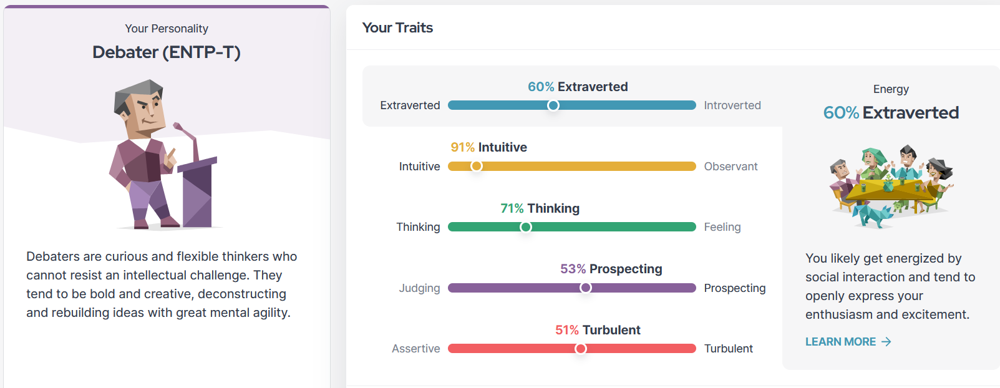

About Me
My Hobby, and how it affected me.
In my earlier years, my parents believed in the importance of eductaion, having both been educators themselves. Thus, a book has found itself thrust into my hands ever since I could hold it with enough dexterity to not rip the pages out. This, coupled with the internet not being as ubiquitous as it is now and me not being a particularly physically active child, led to a voracious appetite for any book I could get my hand on, and a vivid imagination to pass the time with stories of my own when not reading. This directly helped me become what many would call "academically gifted throughout kindergarten, preparatory school and even highschool. I'd even say my readi g comprehension skills are the main reason why the secondary external exams posed little challenge.
However, during 2020, when the pandemic occurred, the switch from brick and mortar school to virtual classrooms left me out of the environment I had thrived in, and grown to rely on. My academic performance tanked, due to truancy from what I held in my mind as 'Fak School'. Once the gravity of the situation had made itself apparent to me, I underwent the difficult process of reorienting myself to the new normal, and its an improvement I'm working on every single day. Even now in my current schooling, I'll find myself reading through the assigned literature as a priority, where i may accidentally leave the actual assignments undone until the last moment.
Albert Camus, my Source of Inspiration
I consider Albert Camus to be a source of inspiration because of his deep understanding of human nature and his steadfast adherence to the ideals of justice and freedom.
His philosophy, often associated with absurdism and existentialism, examines the purpose of existence and how humans battle an apparently uncaring cosmos.
Camus's conviction that every person may find fulfillment and purpose in life despite the absurdities of life is one of the things that makes him or her stand out as a hero. He was said to say, "In the depth of winter, I finally learned that within me there lay an invincible summer". His tenacity and optimism are evident in this quotation, which highlights the inner strength that may be discovered even in the most, which I believe are admirable traits to emulate
My Personality, According to Big Data
Personality Tests are one of many online tools people use to find more information on themselves. And with most companies one can find themselves interacting with online scalping more and more behavioral data about their users, some are becoming data models with shocking predictive power.
For my purposes, I've decided to use the Myers-Briggs Personality Test to gain insights. Below are my results.

I see it fitting to be categorized as an ENTP-T (Extraverted, Intuitive, Thinking, Perceiving - Turbulent). I often display a great desire to participate in dynamic conversations and learn about new concepts, which fits in nicely with my job helping people with a variety of issues. I can rapidly understand complex concepts according to my intuitive nature, and I approach difficulties logically and analytically thanks to my thinking trait.
The tumultuous side of my personality points to a propensity for self-doubt, which frequently paralyzes me, and a drive for constant development, which aligns with my ongoing process of learning and adapting to give better answers. All in all, I think the outcome is a true representation of my abilities and methodology since it encapsulates my lively and curious personality.